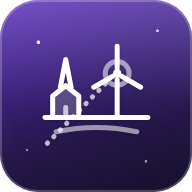

Was ist das da hinten? Türme, Kirchen, Mühlen, Orte und Berge – mit Entfernung und Richtung.
HorizontWahr sucht markante Punkte rund um deinen Standort aus OpenStreetMap und merkt sie sich auf dem Gerät. Danach funktioniert die Kamera-Ansicht auch ohne Netz.
Halte dein iPhone hoch und schwenke langsam über den Horizont. Über jedem Objekt steht Name und Entfernung; im Fadenkreuz erscheinen Details. Das Kamerabild wird nicht gespeichert und nicht übertragen.
Norden oben. Abstand vom Mittelpunkt wächst mit der Wurzel der Entfernung, damit nahe Punkte nicht verschwinden.
Tippe auf „Suchen“, um das Objekt in der Kamera-Ansicht anzupeilen. Daten © OpenStreetMap-Mitwirkende (ODbL).
Mit üblicher Lichtbrechung der Luft (Faktor 0,13) auf einer glatten Erdkugel. Bei Dunst oder Nebel ist die tatsächliche Sicht oft viel geringer. Ein Objekt jenseits des Horizonts ist im unteren Teil verdeckt – HorizontWahr zeigt im Fadenkreuz an, wie viele Meter etwa.
Der Kompass des iPhones kann einige Grad abweichen, besonders in der Nähe von Metall, Autos oder Lautsprechern. Mit „Ausrichten“ in der Kamera-Ansicht peilst du ein bekanntes Objekt an und gleichst die Richtung aus. Höhen stammen aus OpenStreetMap; fehlen sie, nimmt HorizontWahr typische Werte an (im Fadenkreuz als „angenommen“ markiert). Geländehöhen kommen – wenn verfügbar – von Open-Meteo.
Objekte: © OpenStreetMap-Mitwirkende, Open Database License (ODbL), abgefragt über die Overpass API. Geländehöhen: Open-Meteo.com, CC BY 4.0. Gespeichert wird nur auf deinem Gerät; Einzelheiten unter Datenschutz und Lizenzen.
Version 1.0 · Stand 10/2026 · Teil der WahrZentrale